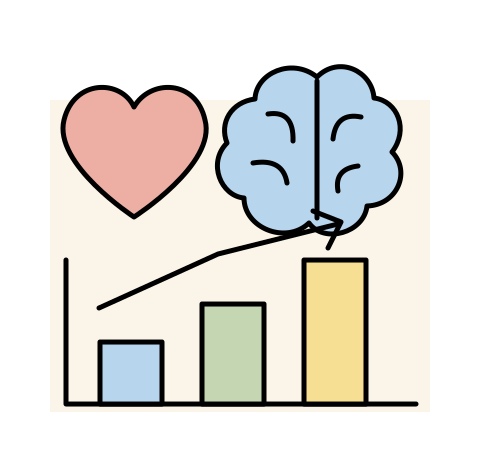

Artificial intelligence has a very subjective view made up by society because of its controversial impacts on people and the environment. Some of its benefits include enhancing productivity and economic value when helping people complete tasks at a faster rate, as well as give instant feedback, organize information, and serve as a learning tool. It also helps the health industry when enhancing research and helps with identifying and treating diagnosis. Apart from that, its ability to spot objects and learn patterns helps with safety and forecasts potential dangers and disasters, as well as helps to prevent them.
What are its benefits? What are its challenges and risks?
